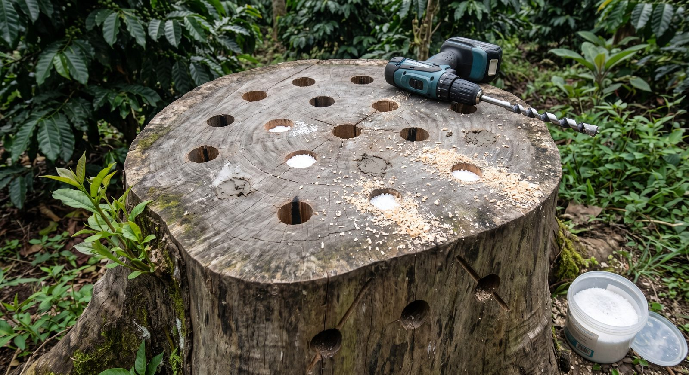

📖 Ini ringkasan kerja. Bukti, angka, kehati-hatian ilmiah, dan rujukan lengkap ada di tombol ↗ Buka penuh di atas.
MATIKAN dulu — baru LAPUKKAN. Jangan dibalik.Selama kambium masih hidup, tidak ada jamur pelapuk yang bisa masuk. Kayu hidup punya pertahanan: kadar air tinggi, senyawa fenolik, dan kambium yang terus menutup luka. Itu sebabnya setelah hampir 3 tahun kayunya masih keras.
Kabar baiknya
Kambium beberapa tunggak masih segar → sebagian masih hidup → belum jadi makanan jamur akar. Ancamannya belum aktif.
Kabar buruknya
Begitu tunggak mati nanti, seluruh massa kayu jadi makanan jamur sekaligus. Itu persis skenario K3-P01.
Karena itu
Mematikannya harus disengaja dan terjadwal, supaya pelapukannya kita yang mengendalikan — bukan jamur akar yang kebetulan lewat.
👁 Pola pengeboran tunggak
Urutan kerja, empat cara KNO₃, dan hitungan biaya ada di bawah gambar.

12345
T1Pola pengeboran tunggak
Pola sarang lebah — berselang-seling menyebar rata, jarak 8–10 cm(selebar kepalan tangan)
Tepi disisakan ± 25 cm(satu panjang sepatu) — supaya kayunya tidak pecah
KNO₃ butiran — ± satu genggam (100 g) per lubang, lalu sumbat lumpur
Mata bor Ø 12–20 mm(sebesar jari kelingking sampai telunjuk), anjuran 16 mm. Dalam 20–30 cm(satu jengkal s/d satu setengah)
Lubang serong dari sisi tunggak — miring ± 45° ke arah tengah, menjangkau bagian yang tak terjangkau dari atas
Matikan tunggaknya dulu. Selama kambium masih hidup, tidak ada jamur pelapuk yang bisa masuk — dan mengebor pun tidak menolong.
🖼️ Semua gambar di halaman ini dibuat dengan bantuan AI sebagai alat bantu memahami — bukan foto kebun kita, jangan dipakai sebagai bukti kondisi lapangan. Yang sah adalah bulatan bernomor dan daftar di bawah tiap gambar — itu tulisan kita. Kalau angka di gambar berbeda dengan tabel di halaman ini, tabel yang benar.
1 Dua tahap — dan satu larangan keras
AMATIKANOles triklopir ke kambium segar — justru efektif karena masih hidup, obatnya terbawa sampai ke akar. Tanpa kimia: potong tunas berulang tiap muncul, 1–2 tahun sampai cadangan pati akar habis
BLAPUKKANSetelah mati: pasok nitrogen (KNO₃) untuk melunakkan, lalu masukkan jamur pelapuk pilihan kita supaya bukan jamur akar yang duluan menempati
🚫 KILLTREE (hexazinone) — JANGAN dipakai di kebun ini. Ia diserap lewat akar dan sangat mudah berpindah bersama air. Akar kopi dangkal 0–30 cm berada di zona yang sama, dan kopi termasuk golongan berdaun lebar yang justru disasar. Di lahan datar seperti kebun ini air menggenang lalu meresap turun — obatnya sampai ke akar pohon lain. Yang tepat untuk tunggak adalah triklopir, karena terikat tanah dan tidak berpindah lewat akar.
2 Pola pengeboran — sarang lebah
📏 Kalau angka di gambar berbeda dengan tabel di halaman ini, tabel yang benar. Tabel tidak bisa salah dibaca gara-gara posisi garis atau panah.
3 KNO₃ — empat cara tanpa air panas
Cara 1 · paling praktis
Butiran kering
Tuang langsung ke lubang ± satu genggam = 100 g, sumbat lumpur. Hujan yang melarutkannya
Cara 2
Larut air dingin
Aduk kuat di ember, tuang. Lebih lambat larut tapi tetap jalan
Cara 3
Bawa air panas
Termos dari rumah. Paling cepat meresap, tapi menambah beban bawaan
Cara 4
Bertahap
Isi ulang tiap kunjungan berikutnya. Cocok kalau kebunnya jauh
Jangan berharap terlalu banyak dari KNO₃. Bukti ilmiahnya tidak sekuat kesan yang dijual penjual — nitrogen berlebih bisa menaikkan penguraian selulosa tapi menurunkan penguraian lignin. Posisikan ia sebagai pelunak dan pembuka jalan, bukan solusi tunggal. Klaim "4–6 minggu jadi lunak" itu kondisi ideal; untuk bonggol waru atau durian besar, harapkan beberapa bulan sampai setahun.
4 Kunci strategi — siapa yang melapukkan menentukan segalanya
Kalau dibiarkan
Yang datang menempati kayu mati adalah jamur akar (Rigidoporus / Phellinus) — dan dari situ ia menular lewat sentuhan akar ke kopi sehat di sekitarnya. Ini yang kita duga terjadi pada K3-P01.
Kalau kita yang mengisi duluan
Masukkan jamur tiram dan/atau Trichoderma ke lubang bor. Kayunya tetap lapuk, tapi yang menempatinya jamur yang tidak menyerang kopi — sekaligus menutup pintu bagi jamur akar.
5 Urutan kerja per tunggak
#
Tindakan
Rincian
Jeda
1
Matikan
Oles triklopir ke kambium segar, atau potong tunas berulang bila memilih tanpa kimia
—
2
Bor
Sarang lebah, dalam satu jengkal s/d satu setengah, jarak sekepalan, plus lubang serong dari sisi
bisa langsung
3
KNO₃
Pilih salah satu dari 4 cara. Sumbat lumpur, tutup karung atau mulsa supaya lembap
—
4
Inokulasi
Bibit jamur tiram dan/atau Trichoderma ke lubang. Sumbat lagi
4–8 minggu setelah #3
5
Jaga & pantau
Tetap lembap dan tertutup. Uji kekerasan: linggis masuk berapa cm
tiap 2 bulan
6
Bongkar
Cungkil manual saat sudah lunak — jauh lebih ringan daripada mencabut bonggol keras
bertahap
7
Urug lubangnya
Di lahan datar, lubang bekas bongkaran tidak mengering sendiri — ia jadi kolam. Urug sampai rata atau sedikit lebih tinggi, pakai kerukan abu vulkanik dari sekitar
hari yang sama
8
Buang kayunya
Masuk aliran 5 — bahan SAKIT: dimusnahkan di tong bakar. Jangan dikompos, jangan ditumpuk di pinggir kebun
hari yang sama
6 Biaya — kenapa triase, bukan cabut semua
Cabut total 86 tunggak
± Rp 43 jt
≈ 60% seluruh RAB 2 siklus. Tidak realistis
Potong akar lateral + parit, semua tunggak
± Rp 19 jt
Tanpa triase — masih terlalu besar
Triase Tier-1 (5–10 titik)
± Rp 2,8 jt
Survei Rp 220 rb dulu → ternyata mayoritas tunggak tidak perlu digali sama sekali
Prioritas naik untuk tunggak yang berada di titik langganan genangan — bukan hanya yang paling besar. Di lahan datar air tinggal, dan genangan mempercepat pembusukan akar sekaligus penularannya.
7 Yang dicatat ke dashboard
Per tunggak
Koordinat GPS · jenis kayu · kambium masih segar atau tidak
Per langkah
Tanggal langkah 1–8, supaya jedanya terlacak
Uji kekerasan
Tiap 2 bulan: linggis masuk berapa cm
Pemusnahan
Tanggal kayu masuk tong bakar → jejak audit sanitasi
⚠️ Kejujuran bukti. Diagnosis busuk akar K3-P01 masih hipotesis kerja — belum ada identifikasi laboratorium. Angka keberhasilan Trichoderma 67–71% berasal dari uji di laboratorium pada karet, bukan lapangan pada kopi; kopi memang inang yang diakui dan mekanismenya sama, tapi ini ekstrapolasi terinformasi, bukan bukti langsung.
Acuan cepat · Sanitasi Tunggak · Wakaf Produktif Kebun Kopi Ngantang · disusun 29 Juli 2026, diperbarui 1 Agustus 2026.
Halaman ini sengaja ringkas untuk dipakai di lapangan. Seluruh bukti, angka rinci, dan rujukan ilmiah ada di versi lengkap — buka lewat tombol ↗ Buka penuh. Status BRIN: penjajakan, belum ada MoU maupun PKS.